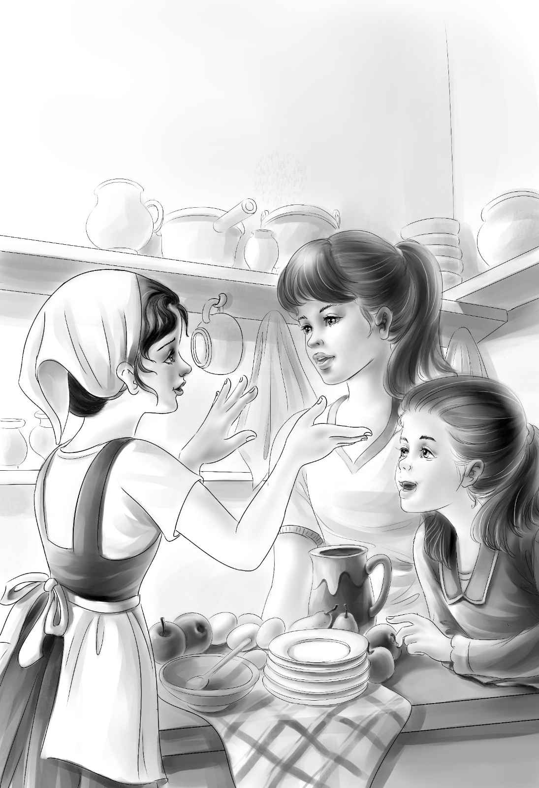

Sam，the neighbor，woke the girls the next morning，bringing the milk. The girls could hear Maggie in the kitchen，“Shh，Shh！ Sam Weeks！You’ll wake those girls.”
“I want to wake them，” said Sam. “I want to see them.” He began to whistle.
The girls laughed while they washed their faces in the big wash bowl in their room. They dressed quickly. They wanted to see Sam，too.
“Well，well！” he said，as they came into the kitchen. “I hear you came to see your Aunt Jane. Are you planning to stay here all summer？”
“Sam！”cried Maggie. “How do they know？”
“We really don’t know how long we’ll stay，” said Jessie. “We don’t know how long Aunt Jane will want us.”
“I’m worried about you，” Sam said. “I’m afraid you won’t get enough food. Maggie had to eat at our house when she got real hungry.”
“Well，” answered Jessie，dropping some eggs into hot water，“We can buy food. Grandfather gave me some money.”
“I hope your aunt will let you eat it after you get it，” said Sam. He turned to go.
He stopped at the door and turned to Maggie.
“A stranger got off the train last night，” he said.
“Yes，we know！” cried both girls.
“That’s right，you would know，” said Sam.
“We call him our Mystery Man，” said Jessie.
“He’s a mystery，all right，” said Sam. “I noticed him because not very many people get off that fast train.”
Sam watched the three people sit down at the pretty table. He turned and walked quickly out the kitchen door.
Jessie smiled as she poured hot milk on a piece of toast.
“A little salt，” she laughed，“and Aunt Jane’s breakfast is ready.”
She carried the plate into Aunt Jane’s bedroom.
“More food，I suppose，” said Aunt Jane.
“That’s fight，” said Jessie. “It’s milk toast. Delicious！ Now，while you eat，I’ll tell you our plan. Maggie is taking us to the store this morning to buy food. And while we are near the station，we’ll send a telegram to Grandfather. We’ll tell him we are having a fine time.”

“A fine time？ Pooh！” said Aunt Jane.
“But it’s true，Aunt Jane，” said Jessie quietly.“We love the ranch already. It’s a beautiful place！”
“I’m the only person who has ever really liked this ranch，” her aunt said. She began to eat her breakfast. Jessie watched her.
“She seems almost starved. If she is hungry，why doesn’t she want to eat？” Jessie said to herself.
Jessie picked up the empty plate and left the room quietly.
When Jessie came into the kitchen，she saw Maggie at the back door with the horse and wagon. To her surprise，Violet was already on the seat.
“Don’t we lock the door？” she asked.
“No，we never do. Nobody ever comes here，”said Maggie. “Go on，old boy！”
As the horse walked slowly along，the girls made up a telegram to send to their grandfather. Tom Young，the station agent，sent the telegram.
“A telegram every day. Quite an exciting town！”he said.
Just then they heard a train whistle. “The train goes the other way every morning，” said Maggie.“Do you want to watch it come in？”
They saw the train come into the station. Nobody got on and nobody got off.
“That’s the way it always is，” said Maggie. “Soon the train won’t stop at Centerville any more. It doesn’t pay.”
Maggie and the girls went to the store. They bought enough groceries to last a week and loaded them into the wagon. The old horse walked even slower than usual going home，because of the load.
When they came back to the ranch，they found Aunt Jane very cross.
“Humph！” she said to Maggie. “You go off riding all over the country and leave me here alone so that anything can happen！”
“But，Miss Jane，” Maggie said，“what could possibly happen to you out here？”
“I was nearly fooled into selling this ranch！That’s what could happen，” the little old lady answered.
“Now，Miss Jane，this must be another one of your strange ideas，” Maggie said.
“Strange，is it？ Well，look at this.” She pulled a paper from beneath her pillow. Maggie and the girls came closer to the bed to see what it said. It was an offer to buy the ranch for ten thousand dollars.
“Think of it！” Aunt Jane said. “Ten thousand dollars for my ranch！ But I told those three men that my ranch isn’t for sale at any price. I have other plans for it.”
“Dear Aunt Jane，” said Violet softly，“do you mean three men came into your room？”
“Yes，” replied Aunt Jane. “But don’t you worry，my dear. I could manage them.”
Aunt Jane leaned her head back on her pillows again.
“Go away，now. All this excitement has made me tired.”
Maggie and the girls went into the kitchen.“I’d think she would be glad to get rid of the place at any price，” said Maggie.
“I’m glad she didn’t sell it，though，” said Violet. “It’s such a beautiful ranch. I wonder what plans she has for it.”